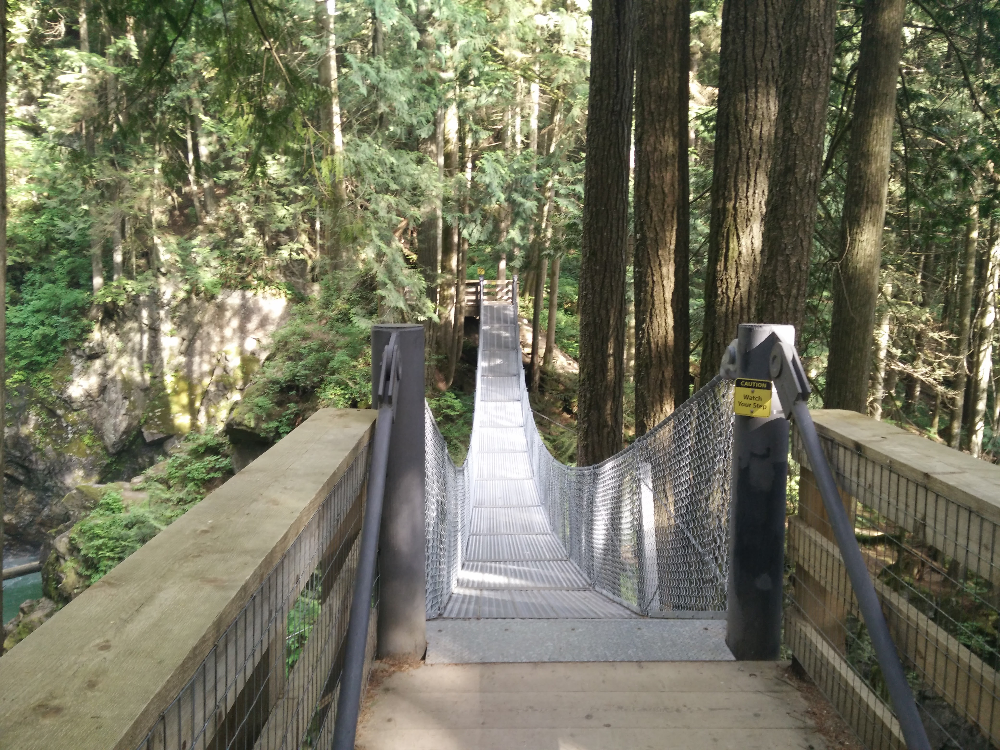

A quick hike for all ages with great views
Located Northeast of Mission, BC, Cascade Falls is a scenic waterfall that can be viewed from a suspension bridge that crosses the river, just in front of the falls. The short walk uphill to the falls makes the long drive worth the trip.
 From the parking lot, walk towards the metal gate by the hill (note: sometimes the gate is not noticeable if it is open) and walk up towards a trail that begins on the right. Follow the trail up a steep hill as it winds to the right and within minutes you reach a set of wooden stairs. Climb the wooden stairs until you are just underneath the suspension bridge, where you get the first scenic view of Cascade Falls. Walk up the remaining stairs and cross the suspension bridge. During the early spring months and after a rainfall, an enormous amount of water flows over the rocks and into the canyon down below. Continue across the bridge to the wooden platform on the far side.
The wooden platform is as close as you can get to the falls and when a lot of water is dropping into the canyon, you can feel the mist from this platform. For those with strollers or wheelchairs, you can continue on the wide, gravel road to reach the falls. That route is slightly longer and less scenic. But the road will still reach the falls at the top so you can still access the viewing platform without navigating the stairs.
After enjoying the view, cross back over the suspension bridge and walk back down the wooden stairs, returning to the parking lot via the gravel trail.
Reviews
A Natural Beauty
Cascade Falls is a nice walk and great location for a family outing. The waterfall is gorgeous and well worth the drive out. The trail is relatively short, so it's not a great destination if you're looking for a full day of exercise. Picnic area just besides the parking lot has beautiful views. The more adventurous can have a dip in the refreshingly cold water on a warm day.
Very Impressive!
Cascade Falls is easy to get to, yet still impressive. This autumn has been very wet with lots of rain and snowmelt from the mountains and there is a LOT of water coming over the falls right now. It's an easy walk from the parking lot, whether you take the trail or the gravel road but it's only about 10 minutes either way. There's a really nice suspension bridge over Cascade Creek to see the falls.